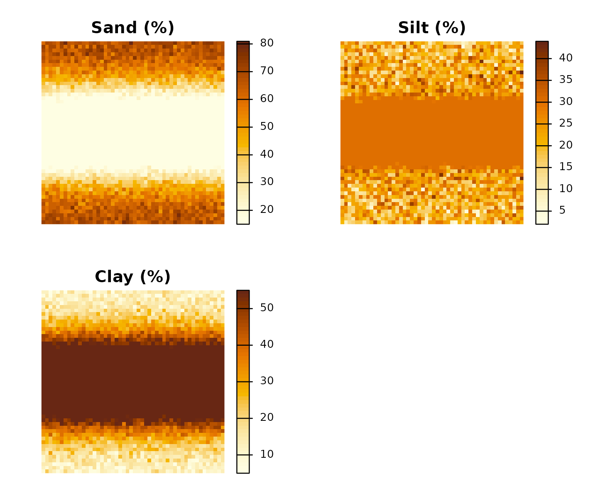
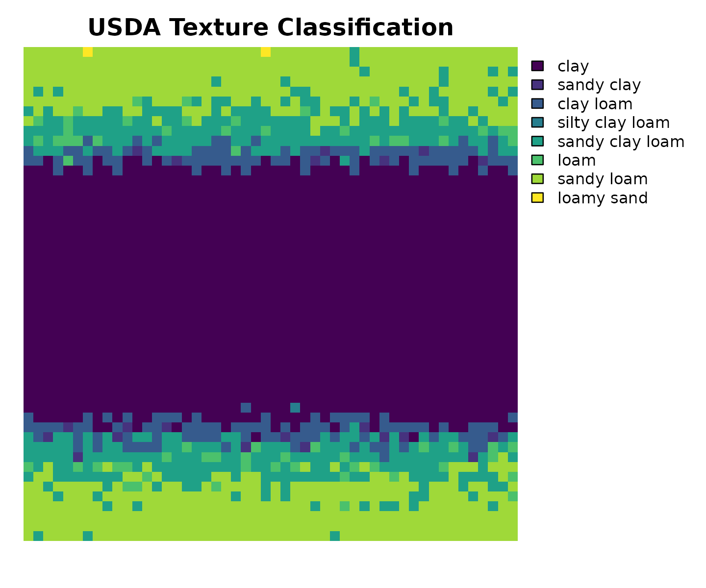
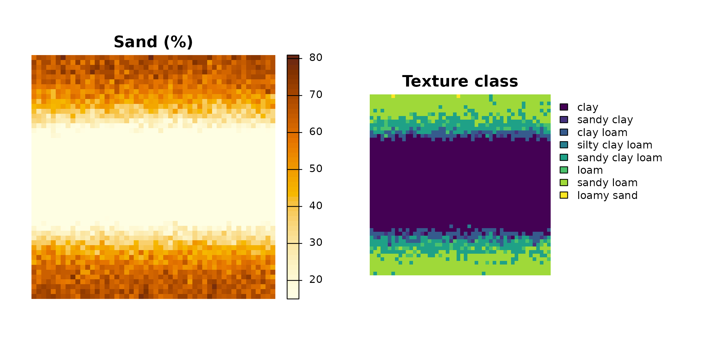
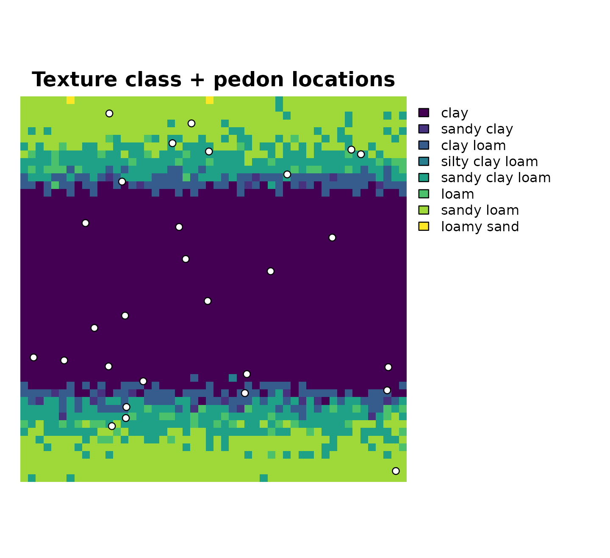

GIS Workflow: Classifying Raster and Vector Soil Data
Source:vignettes/gis-workflow.Rmd
gis-workflow.RmdAs R-GIS workflows become more common in soil science,
tidysoiltexture provides classify_texture()
methods for two key spatial classes:
-
terra::SpatRaster— classify every cell of a sand/silt/clay raster stack and return a categorical output raster suitable for mapping and export. -
sf— classify point features (e.g. field observations, pedon locations) and return the samesfobject with texture class columns appended.
terraandsfare suggested dependencies. Install them withinstall.packages(c("terra", "sf"))to follow the full workflow.
1. Raster workflow with terra
1.1 Load a sand / silt / clay raster stack
In practice your raster stack typically comes from a downloaded
product such as SoilGrids or ESDAC. The only requirement is
that the SpatRaster has named layers for sand, silt, and
clay (in %).
library(terra)
# Load a 3-band GeoTIFF where bands are named sand, silt, clay
r <- terra::rast("path/to/soil_texture_stack.tif")
# Rename layers if needed
names(r) <- c("sand", "silt", "clay")
# Inspect
print(r)
terra::plot(r, main = c("Sand (%)", "Silt (%)", "Clay (%)"))For this vignette we build a synthetic stack that mimics a 20 × 20 km catchment with a sandy upland area and a clay-rich valley floor:
library(terra)
#> terra 1.9.11
set.seed(1847)
# 50 × 50 cell grid, 400 m resolution, EPSG:32632 (UTM zone 32N)
r_template <- terra::rast(
nrows = 50, ncols = 50,
xmin = 0, xmax = 20000,
ymin = 0, ymax = 20000,
crs = "EPSG:32632"
)
# Simulate a north–south valley: clay increases toward centre column
col_idx <- terra::colFromX(r_template, terra::xFromCol(r_template,
seq_len(terra::ncol(r_template))))
valley <- dnorm(seq(0, 1, length.out = terra::ncol(r_template)),
mean = 0.5, sd = 0.18)
valley_m <- matrix(rep(valley, each = terra::nrow(r_template)),
nrow = terra::nrow(r_template))
# Sand decreases toward valley; clay increases
sand_m <- pmax(15, pmin(85, 70 - 45 * valley_m +
matrix(rnorm(2500, 0, 5), 50, 50)))
clay_m <- pmax(5, pmin(55, 10 + 40 * valley_m +
matrix(rnorm(2500, 0, 4), 50, 50)))
silt_m <- 100 - sand_m - clay_m
# Force silt ≥ 2 (push excess into sand)
excess <- pmin(0, silt_m - 2)
sand_m <- sand_m + excess
silt_m <- silt_m - excess
# Assemble into SpatRaster
r <- c(terra::setValues(r_template, sand_m),
terra::setValues(r_template, silt_m),
terra::setValues(r_template, clay_m))
names(r) <- c("sand", "silt", "clay")
print(r)
#> class : SpatRaster
#> size : 50, 50, 3 (nrow, ncol, nlyr)
#> resolution : 400, 400 (x, y)
#> extent : 0, 20000, 0, 20000 (xmin, xmax, ymin, ymax)
#> coord. ref. : WGS 84 / UTM zone 32N (EPSG:32632)
#> source(s) : memory
#> names : sand, silt, clay
#> min values : 15.00000, 2.000, 5
#> max values : 80.93731, 43.958, 551.2 Inspect the stack
terra::summary(r)
#> sand silt clay
#> Min. :15.00 Min. : 2.00 Min. : 5.00
#> 1st Qu.:15.00 1st Qu.:20.79 1st Qu.:20.06
#> Median :33.11 Median :28.28 Median :42.67
#> Mean :36.85 Mean :25.26 Mean :37.89
#> 3rd Qu.:58.54 3rd Qu.:30.00 3rd Qu.:55.00
#> Max. :80.94 Max. :43.96 Max. :55.00
terra::plot(r,
main = c("Sand (%)", "Silt (%)", "Clay (%)"),
col = grDevices::hcl.colors(50, "YlOrBr", rev = TRUE),
axes = FALSE
)
1.3 Classify
Pass the SpatRaster directly to
classify_texture(). The sand,
silt, and clay arguments name the layers
(default "sand", "silt", "clay"
so they can be omitted here):
r_class <- classify_texture(r) # layer names match defaults
print(r_class)
#> class : SpatRaster
#> size : 50, 50, 1 (nrow, ncol, nlyr)
#> resolution : 400, 400 (x, y)
#> extent : 0, 20000, 0, 20000 (xmin, xmax, ymin, ymax)
#> coord. ref. : WGS 84 / UTM zone 32N (EPSG:32632)
#> source(s) : memory
#> categories : texture_class
#> name : texture_class
#> min value : clay
#> max value : loamy sandThe output is a single-layer categorical SpatRaster.
Integer cell values are mapped to texture class names via a raster
attribute table (RAT):
terra::levels(r_class)[[1]]
#> id texture_class
#> 1 1 clay
#> 2 2 silty clay
#> 3 3 sandy clay
#> 4 4 clay loam
#> 5 5 silty clay loam
#> 6 6 sandy clay loam
#> 7 7 loam
#> 8 8 silty loam
#> 9 9 sandy loam
#> 10 10 silt
#> 11 11 loamy sand
#> 12 12 sandCount how many cells fall into each class:
1.4 Plot the classified raster
terra::plot() recognises categorical rasters and
automatically draws a colour legend:
terra::plot(r_class,
main = "USDA Texture Classification",
axes = FALSE,
mar = c(2, 1, 2, 8) # extra right margin for legend
)
Side-by-side with the sand layer to confirm the spatial pattern:
oldpar <- par(mfrow = c(1, 2), mar = c(1, 1, 2, 6))
terra::plot(r[["sand"]],
main = "Sand (%)",
col = grDevices::hcl.colors(50, "YlOrBr", rev = TRUE),
axes = FALSE)
terra::plot(r_class,
main = "Texture class",
axes = FALSE,
mar = c(1, 1, 2, 10))
par(oldpar)1.5 Export the classified raster
The output is a standard SpatRaster and can be written
to any GDAL-supported format. For GeoTIFF:
terra::writeRaster(r_class, "texture_classification.tif",
datatype = "INT1U", overwrite = TRUE)2. Vector workflow with sf
For point observations (e.g. soil survey pedons, lab samples with
coordinates) the sf method appends
.texture_class and .texture_abbr while
preserving geometry:
library(sf)
#> Linking to GEOS 3.12.1, GDAL 3.8.4, PROJ 9.4.0; sf_use_s2() is TRUE
# 30 synthetic pedon locations across the study area
set.seed(3312)
pedons <- sf::st_as_sf(
tibble::tibble(
pedon_id = sprintf("P%02d", 1:30),
x = runif(30, 500, 19500),
y = runif(30, 500, 19500),
sand = runif(30, 10, 80),
clay = runif(30, 5, 45)
) |>
dplyr::mutate(silt = 100 - sand - clay) |>
dplyr::filter(silt >= 2),
coords = c("x", "y"),
crs = "EPSG:32632"
)
# Classify — bare column names, tidy-eval, geometry preserved
pedons_class <- classify_texture(pedons, sand = sand, silt = silt, clay = clay)
dplyr::select(pedons_class, pedon_id, sand, silt, clay,
.texture_class, .texture_abbr)
#> Simple feature collection with 28 features and 6 fields
#> Geometry type: POINT
#> Dimension: XY
#> Bounding box: xmin: 688.112 ymin: 564.7616 xmax: 19440.82 ymax: 19114.22
#> Projected CRS: WGS 84 / UTM zone 32N
#> # A tibble: 28 × 7
#> pedon_id sand silt clay .texture_class .texture_abbr
#> <chr> <dbl> <dbl> <dbl> <chr> <chr>
#> 1 P01 13.8 53.7 32.5 silty clay loam SiClLo
#> 2 P03 34.2 35.6 30.2 clay loam ClLo
#> 3 P04 40.0 35.8 24.2 loam Lo
#> 4 P05 41.7 34.9 23.4 loam Lo
#> 5 P06 43.6 28.8 27.6 clay loam ClLo
#> 6 P07 28.3 45.0 26.7 loam Lo
#> 7 P08 29.1 60.1 10.8 silty loam SiLo
#> 8 P09 56.0 17.5 26.5 sandy clay loam SaClLo
#> 9 P10 41.1 15.9 42.9 clay Cl
#> 10 P11 56.5 23.6 19.9 sandy loam SaLo
#> # ℹ 18 more rows
#> # ℹ 1 more variable: geometry <POINT [m]>2.1 Plot points over the classified raster
terra::plot(r_class,
main = "Texture class + pedon locations",
axes = FALSE,
mar = c(1, 1, 2, 10)
)
plot(sf::st_geometry(pedons_class),
add = TRUE,
pch = 21,
bg = "white",
cex = 0.9
)
3. Notes on real-world data sources
| Source | Resolution | Coverage | URL |
|---|---|---|---|
| SoilGrids 2.0 | 250 m | Global | soilgrids.org |
| ESDAC LUCAS | Point / 500 m | Europe | esdac.jrc.ec.europa.eu |
| SSURGO | Polygon | USA | websoilsurvey.nrcs.usda.gov |
SoilGrids delivers sand/silt/clay as separate GeoTIFFs (e.g.
sand_0-5cm_mean.tif). After downloading, stack and
rename:
library(terra)
r <- terra::rast(c(
"sand_0-5cm_mean.tif",
"silt_0-5cm_mean.tif",
"clay_0-5cm_mean.tif"
))
names(r) <- c("sand", "silt", "clay")
# SoilGrids values are in g/kg — convert to %
r <- r / 10
# Classify
r_class <- classify_texture(r)
terra::writeRaster(r_class, "usda_texture_class.tif",
datatype = "INT1U", overwrite = TRUE)